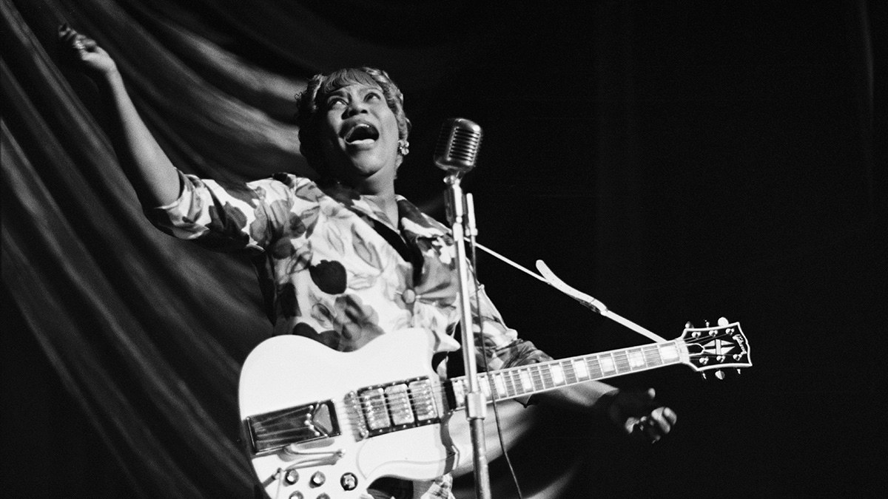

MUS 302 · What to Listen for in Music
Module 2: African American Foundational Traditions · Listening Guide · Track 2 of 5
Track 2 Sister Rosetta Tharpe, "Strange Things Happening Every Day" (1944)

Context
Tharpe before the song: Cotton Plant, the Cotton Club, and going electric
Sister Rosetta Tharpe was born Rosetta Nubin in Cotton Plant, Arkansas, on March 20, 1915, to Katie Bell Nubin, an evangelist, mandolin player, and singer in the , the largest historically Black denomination in the United States. Tharpe began performing at the age of four. By six she was touring with her mother through the South, billed as "Little Rosetta Nubin, the singing and guitar playing miracle," accompanying her mother's tent-revival sermons and playing for COGIC congregations that practiced an ecstatic, instrumentally rich style of worship and that, unusually for Christian denominations of the period, allowed women to teach and lead. The COGIC service is where Tharpe learned what music was for. The song with electric instrumental accompaniment, the between leader and congregation, the body in motion as part of the praise: she did not invent these things. She brought them, eventually, into rooms that did not expect them.
Tharpe and her mother settled in Chicago in the 1920s. In 1934, at nineteen, she married a COGIC preacher named Thomas Tharpe, took his last name, and a few years later moved to New York City. The marriage ended (their divorce was finalized in 1943) but the name stuck. On October 31, 1938, when she was twenty-three, she recorded four sides for : "Rock Me," "That's All," "My Man and I," and "The Lonesome Road." They were the first sides Decca had ever released. They were instant hits. That same December, the producer John Hammond included her in , a landmark Carnegie Hall concert that introduced Black to a New York concert audience. By the early 1940s, Tharpe was holding down a residency at Harlem's , recording with Cab Calloway and the Lucky Millinder Orchestra, and building a national reputation that ran straight across the line that COGIC, and most American Christian communities, drew between sacred and secular performance.
That she crossed the line at all was scandalous. That she crossed it carrying a guitar was extraordinary. Tharpe was one of the first popular recording artists of any race or gender to perform on . The instrument had only been commercially available for about a decade by the time of her 1938 debut. In the 1940s, she began driving her amplifier hard enough to produce the distorted, slightly-overdriven tone that would later become the signature sound of rock and roll. As her biographer has put it, "Long before 'women in rock' became a media catchphrase, Rosetta Tharpe proved in spectacular fashion that women could rock." The fellow gospel star Inez Andrews, watching male peers watch Tharpe play, said: "The fellows would look at her, and I don't know whether there was envy or what, but sometimes she would play rings around them."
By 1944, when she walked into a Decca studio to record "Strange Things Happening Every Day," Tharpe had been a national star for six years and was working in a sustained tension with the Sanctified church communities that had raised her. Many COGIC and Pentecostal congregations objected, sometimes vehemently, to her nightclub work and to her secular collaborations. The song she was about to record answered them.
The song: a sermon, in answer to her critics
"Strange Things Happening Every Day" is, on its surface, a traditional gospel song in the African American spiritual tradition: a warning about hypocrisy and the coming day of judgment, set to a moving, danceable groove. The opening verse is the sting. "Oh, we hear church people say / they are in the holy way / there are strange things happening every day." Wald, drawing on Tharpe's own statements and on contemporary press coverage, has argued that the lyric is a direct response to the church people who had criticized Tharpe for taking gospel into nightclubs. Tharpe answered them inside the form they had taught her: a sermon, scriptural in its references to the last judgment, set in the call-and-response shape of a Sanctified service, with its critique of hypocrisy aimed squarely at the people who had been calling her a hypocrite. The song says: I see you. The strange things happening every day include the strange thing of pious church folk denouncing music that brings people closer to God.
The recording was made at a particular moment in the American music industry. Decca, Tharpe's label, had spent most of 1942 and 1943 unable to record union musicians because of the , which the union had called over royalty payments from radio and jukeboxes. Decca settled with the union in September 1943, more than a year before its competitors. That settlement is part of why the September 1944 "Strange Things" session was possible at all, and part of why Tharpe was one of the few Black gospel artists positioned to record actively during the wartime years. (Her popularity was such that she and the Dixie Hummingbirds were the only Black gospel acts authorized to record , the records the U.S. military pressed for troops overseas.)
The recording: Decca, New York, September 22, 1944
The session took place in Decca's New York studio on September 22, 1944. (A few sources give the date as September 26; the Decca master log filed by the engineer gives the 22nd, which is the date most discographies follow.) Tharpe sang and played the lead electric guitar. Backing her was the Sam Price Trio, the small group led by Decca's house boogie-woogie pianist (piano), with Abe Bolar (bass) and Harold "Doc" West (drums). Four musicians, no horns, no choir, no overdubs. The session produced four sides; "Strange Things Happening Every Day" went to Decca matrix 72398 and was released on Decca 8669 in March 1945, paired with "Two Little Fishes and Five Loaves of Bread" on the other side.
The crucial fact about the recording, sonically, is the role of Tharpe's electric guitar. Until the early 1940s, the guitar on a popular recording was almost always a instrument, played acoustically, providing chord support behind a singer or a soloist. On "Strange Things," Tharpe's guitar is the lead voice next to her own. It opens the recording with a propulsive, single-note riff. It plays a full break in the middle of the song, taking what would, on a more conventional 1944 record, have been a piano or saxophone solo. And it is the rhythmic engine that drives the entire track, locked to Sammy Price's piano in a way that feels less like 1944 jump-blues than like 1955 rock and roll. Many writers, for that reason, have called this the first rock and roll record. The claim is contested (Louis Jordan's "Saturday Night Fish Fry" of 1949, Wynonie Harris's "Good Rocking Tonight" of 1948, Jackie Brenston's "Rocket 88" of 1951 are the other usual candidates), but the recording is, at minimum, one of the small handful of 1940s records that contain everything rock and roll would soon claim as its own.
Reception, the long erasure, and the 2018 induction
"Strange Things Happening Every Day" entered the Billboard "race records" chart in April 1945 and climbed to number 2, where it stayed for two weeks. It was the first gospel record to cross over to the chart that the industry would soon rename and . Tharpe's career carried forward through the rest of the 1940s on the strength of this success and of her 1946 partnership with the gospel singer , with whom Tharpe toured and recorded for several years and with whom, Wald reports, she was rumored to have been romantically involved. Their hit "Up Above My Head" (1947) and the followups built Tharpe and Knight into one of gospel's biggest live draws.
In the early 1950s, Tharpe and Knight recorded a set of straight blues sides that flopped commercially and damaged Tharpe's standing in the church communities that had still, mostly, claimed her. Marie Knight's mother and two children died in a house fire in 1950, the duo broke up, and Tharpe's career began the long decline that ended in obscurity in the United States by the early 1960s. The British folk and blues revival rediscovered her. In May 1964, she traveled to England as part of the Blues and Gospel Train tour, alongside Muddy Waters and Reverend Gary Davis, and played a famous concert in the rain at the disused Wilbraham Road railway station outside Manchester, in front of a young audience that included future members of the Rolling Stones, Led Zeppelin, and the Yardbirds. She continued to tour and record in Europe for the rest of the decade. She suffered a stroke in 1970 and died in Philadelphia on October 9, 1973.
For the next four decades, the standard story of rock and roll's origins ran from Bill Haley and Elvis Presley through Chuck Berry and Little Richard and barely mentioned her. Wald's biography Shout, Sister, Shout! (Beacon, 2007) was the first full scholarly account of her life and the foundation of the recovery that followed. In 2018, the Rock and Roll Hall of Fame inducted Tharpe in its Early Influence category. Rolling Stone, that year, said: "no artist has been more overdue for recognition than Sister Rosetta Tharpe. A queer black woman from Arkansas who shredded on electric guitar, belted praises both to God and secular pleasures, and broke the color line touring with white singers, she was gospel's first superstar, and she most assuredly rocked." Brittany Howard of Alabama Shakes performed two of Tharpe's songs at the ceremony. The induction was, among other things, an admission that rock and roll's official memory had taken seventy years to catch up to what the audience at Wilbraham Road had heard in 1964 and what listeners to "Strange Things Happening Every Day" had heard in 1945.
Things to listen for
The song is in the of C , in 4/4 , at a of about 155 : substantially faster than any of the Module 1 listening guide tracks, and faster than the Bessie Smith recording from nineteen years earlier by more than double. The harmonic vocabulary is the simplest in this listening guide so far. Three chords (C, F, and G, the we met in DeSanto and Williams) carry the entire song. The runtime is 2 minutes 52 seconds. Personnel are spelled out in the recording paragraph above; bear in mind throughout that the lead instrument is an electric guitar in a year when an electric guitar on a popular recording was still novel.
First, the timbre of the electric guitar. This is what most listeners hearing the recording for the first time in 2026 are likely to notice first. The guitar's tone is bright, slightly broken-up, with the early stage of what would later be called : not the screaming distortion of 1970s hard rock, but the warm, slightly grainy tone of a tube amplifier being driven a little harder than its designers intended. This is what an electric guitar sounded like in 1944. Compare it directly to the on the Bessie Smith recording: where Armstrong's cornet is the soft, conversational instrument answering Smith in the spaces, Tharpe's guitar is the loud, declarative instrument announcing itself from the first second. Listen also to her voice. It is a bright soprano with strong bluesy edges, projecting clearly above the band, with the quick rhythmic phrasing and crisp consonant articulation she learned in COGIC services where the voice had to carry over a clapping, shouting congregation. The texture of her voice is sanctified, but the things she does with that voice (the slight mock of the "we hear church people say" line, the wry knowing in the phrasing) are not pious in any conventional sense.
Second, the texture. Four musicians: voice, electric guitar, piano, bass, drums (Tharpe's guitar and voice are one performer, so the band counts as four). Compare to the three-musician texture of the Bessie Smith recording: Tharpe's band has a rhythm section in the modern sense (bass plus drums laying down a steady pulse), where Smith's recording had no rhythm section at all. The boogie-woogie piano provides the engine: a busy, repeating eight-beats-to-the-bar pattern in the left hand, with treble accents in the right that interlock with what the guitar is doing. The electric guitar sits on top, sometimes playing chords with the piano, sometimes playing single-note answers between vocal phrases (the same call-and-response role Armstrong's cornet played behind Smith, transposed to a different instrument and a different decade). The bass and drums stay simple, supporting the groove rather than contributing melodic ideas of their own. The texture is more layered than Smith's three voices but still much leaner than the orchestral arrangements behind Cooke or the ensemble behind Cruz. This is small-group recording, and small-group recording is what early rock and roll, , and most postwar Black popular music would be built on.
Third, the form. The song is in form, the structure that would dominate American popular music for the rest of the century. Each verse is two lines of new lyrics over the I and IV chords. The chorus is the title phrase repeated, with the band shouting the response ("every day") behind Tharpe's lead. Verses and choruses alternate, with a guitar break in the middle of the song serving the same structural role a saxophone or piano solo would serve in a contemporaneous jump-blues record. The harmonic vocabulary is so simple that the song's energy comes entirely from rhythm, dynamics, and the texture of the performance, not from harmonic interest. This is part of what makes the recording feel modern. Compare the song's three-chord verse-chorus shape to the multi-strain structure of "St. Louis Blues" with its sixteen-bar bridge and its multiple contrasting sections. "Strange Things" is a much simpler thing, structurally, and that simplicity is exactly what rock and roll would adopt: a few chords, a verse-and-chorus shape, a hook to remember, room for a guitar solo in the middle.
Fourth, the guitar break. About 1:30 into the recording, Tharpe takes a sixteen-bar instrumental break on the electric guitar. This is the moment most often cited as evidence for the recording's status as a rock and roll precursor or first instance, and it rewards close listening. She plays mostly single-note lines, blues-inflected, with the rhythmic propulsion of someone who has been playing for dancing congregations her whole life. The phrasing is conversational, almost vocal: she leaves space, she lands accents on the offbeats, she ends phrases with small that imitate the catch of a singing voice. Now consider that the most famous rock-and-roll guitar solos of the 1950s, by Chuck Berry and others, do almost exactly this: single-note blues phrases over a I-IV-V harmonic background, played with vocal-style phrasing, sitting in the middle of a verse-chorus song. Berry was nineteen years old when this record was released. Elvis Presley was nine. Tharpe, in 1944, was already playing what they would later get credit for inventing. The Hall of Fame's 2018 Early Influence induction was, in some sense, just a very late acknowledgment that the rock-and-roll guitar break is a thing Sister Rosetta Tharpe was already doing on this recording.
Reflective question
The framing reading argued that "when Sister Rosetta Tharpe walked onstage with an electric guitar in 1944, the political work was partly that she was there at all, in a tradition that did not expect a Black queer woman to be claiming that instrument and that stage." This recording is the documentary evidence of that political work. Pick one specific moment in the recording (the opening guitar lick, a particular vocal phrase, the guitar break, the way the band shouts the chorus response) and make an argument for what that moment is doing politically as well as musically. Who is the moment for? Who might it have unsettled, in 1944 and after? And does the political work of the moment depend on the lyrics, or on the sound of Tharpe doing what she is doing, or on both at once?
Sources for this section
Wald, Gayle. Shout, Sister, Shout!: The Untold Story of Rock-and-Roll Trailblazer Sister Rosetta Tharpe. Beacon Press, 2007 (revised 2023). The standard biography. Wald is professor of English and American Studies at George Washington University; the book draws on more than 100 interviews with people who knew Tharpe and is the source for everything in this guide that is not separately cited.
Wald, Gayle. "From Spirituals to Swing: Sister Rosetta Tharpe and Gospel Crossover." American Quarterly 55, no. 3 (September 2003): 387-416. The peer-reviewed article that preceded the book and laid the scholarly groundwork for treating Tharpe as a serious subject of academic inquiry.
Heilbut, Anthony. The Gospel Sound: Good News and Bad Times. Limelight Editions, 1971 (revised 1997). The first major popular history of gospel music; sets the context for Tharpe's career within the COGIC and Sanctified traditions.
Mahon, Maureen. Black Diamond Queens: African American Women and Rock and Roll. Duke University Press, 2020. Recovers the histories of Black women whose contributions to rock and roll were systematically erased; opens with extended treatment of Tharpe.
"Sister Rosetta Tharpe." American Masters, season 27, episode 6, dir. Mick Csaky, 2013. The PBS documentary that introduced Tharpe's story to a wide American audience.
Tomaska, Justin. "The Resurgence of the Sister Rosetta Tharpe SG Custom." Reverb News, 2018. On the Manchester 1964 concert and the Gibson Custom that became Tharpe's signature instrument.
"Sister Rosetta Tharpe (1915-1973)." Encyclopedia of Arkansas, Central Arkansas Library System. Detailed biographical entry with Arkansas-specific context, Cotton Plant childhood, and the 2017 dedication of Highway 17 between Cotton Plant and Brinkley as the Sister Rosetta Tharpe Memorial Highway.
Wikipedia. "Strange Things Happening Every Day"; "Sister Rosetta Tharpe." Useful for cross-checking session dates, personnel, chart positions, and discographical detail. Both articles are heavily cited; following the citations to their primary sources (Wald, Heilbut, the Decca session logs) is part of how this guide was written.